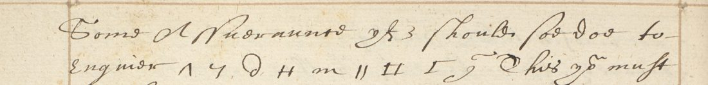

01 The record
Harley MS 260 is a later fair copy of Walsingham’s Paris correspondence of 1570–73, one letter after another with their addresses, under running heads by month. Folio 419r opens with the end of Walsingham’s own letter of 6 February 1572 (old style), in which he asks to be relieved. Then comes the address “To the right honorable Mr Fraunces Walsingham Esq, the Queenes Maiesties Amba[ssador] in Fraunce”, and the letter beginning “Sir I have receaved yor lres of the xxth of this month with the tickett after yor accustomed manner contayning [9]”. The copy breaks off at the foot of f. 419v with a struck-out “finis”. Digges printed it from another copy, with the rest of the letter (Worcester’s dishonour off Boulogne, the French libel against Burghley, Walsingham’s letters of the 24th), under the running head “The Lord Burleigh to Fr. Walsingham”.
DECODE’s sender (“unknown”), recipient (“…”) and date (February 1572) come from the letter-book’s old-style year and the address line. The letter is Burghley’s, to Walsingham, of late January or February 1573.
02 The cipher in the letter
![Harley MS 260 f. 419r: of a Shipp sent to 2 0 cross H 6 1 tt ymagined that Hall three had a meaninge to provoake Glascoe [9] to come hither](r8364_lead.jpg)
| Place | Harley 260 | Digges 1655 | What it is |
|---|---|---|---|
| “contayning …”, “sent from …”, “Glascoe …” ×2, “the ruyn of …” | [9] ×5 | |9|, |c| | the boxed mark the letter-book sets after a cover-name, or in place of a name it does not copy |
| “Glascoe …”, “Hall …” ×2 | 3 (“three”) | ξ, 3, ȝ | the same marker after a name |
| “yf … should soe doe” | 3 | ȝ | a person code, unread |
| “a Shipp sent to …” | 2 0 ‡ H 6 1 | 20 ǂ H Ꭾ ) | a place: VALERY |
| “… ymagined” | tt | ℵ | a person code, unread |
| “to enquire …” | ^ 4 d H m 11 11 I J | x. 7. D. H. m. 11. ⊏. 𝔗. ᘓ. | nine signs, unread |
| “that … had gotten such knowledge” | II | |—| | a person code, unread |

The names in clear are cover-names or real names of the Glasgow affair of November 1572 to February 1573: Glasgow (James Beaton, Archbishop of Glasgow), Davison, Hall. The boxed marks follow such names throughout the letter-book (see R8361 and R8362). Only the two runs are letter cipher.
03 The place name read: VALERY
Digges printed the cipher of Walsingham’s correspondence in cipher type, not as the figures the earlier pass assumed. A search of all 457 page images of his volume, first by the OCR’s word confidence and then by two page-by-page scans, found about 45 ciphered passages in the letters of 1570–73. Four of them are the same word, in letters about the one ship:
| Letter | Context | Digges | Harley 260 |
|---|---|---|---|
| Burghley, Westminster, 11 Nov 1572 (p. 301) | “he hath required me to provide a passenger to attend at Harwich. Le the Port of …” | 2 0 ǂ 6 ɔ Δ | |
| Walsingham, Paris, Nov 1572 (p. 303) | “he desireth that the ship may stay at … 9 or 10 days” | 2 ɔ ǂ 6 r y | |
| Walsingham, Paris, 20 Jan 1573 (p. 313; R8363) | “a Gentleman of [9] departed hence to … with intention to imbarque there” | 2 ) ⌘ Ꭾ ) 4 | 2 1 ⌘ ε 9 4 |
| Burghley, early 1573 (p. 327; R8364) | “by Davisons writing of a ship sent to …” | 20 ǂ H Ꭾ ) | 2 0 ‡ H 6 1 |
Every copy has six signs. The first is always 2 and the third always the same crossed sign (ǂ, ⌘ and ‡ are the founts’ and the copyist’s versions of it). The other four places change from copy to copy. That is what a homophonic alphabet gives when one word is written several times. The place is a French port where a ship waits for passengers bound for England, with Harwich on the English side. The Nov 1572 letter has Walsingham ask that the ship may stay there nine or ten days. Cotton MS Vespasian F VI, the volume of Walsingham’s letters and drafts of 1572–73, holds at f. 197 “A French letter; earnestly desiring that a ship might be kept in waiting at St. Valery. Dec. 11”. VALERY has six letters, and Digges’s copy of the Walsingham letter even ends in a plain “r y”:
V = 2 · A = 0, ɔ, ), 1 · L = ǂ, ⌘, ‡ · E = 6, Ꭾ, H, ε · R = ɔ, ), r, Ꭾ, 9, 6 · Y = Δ, y, 4, ), 1
A few signs turn up under two letters (ɔ/) under A and R, 1 under A and Y). They are the places where Digges’s type and the letter-book copyist blur distinct manuscript signs, which the Digges and Harley copies of the same letters show. The reading does not depend on them. Dieppe, the other six-letter port, needs a different sign for each of its two Ps and two Es in every copy, and nothing in the sources points to it. Harwich, Dover, Calais and Dieppe are all written in clear elsewhere in these letters.
Grade M (probable): the alphabet is not otherwise known, but the length, the fixed signs, the “ry” and the St Valery ship in Walsingham’s file point the same way. With it the passage reads:
I see there was a great mistaking of our doings, for by Davison’s writing of a ship sent to [St] Valery, [tt] imagined that Hall had a meaning to provoke Glasgow to come hither; whereupon this last gentleman came to enquire of Hall some assurance, if [3] should so do, to enquire […]. This you must think must needs appear very strange.
The same reading applies to Walsingham’s group of 20 January in R8363, where the Glasgow gentleman “departed hence to [St] Valery with intention to imbarque there if the barque were not departed”.
04 What was tried for the rest
- The key. Hsuan-Ying Tu’s thesis on Walsingham’s intelligence (York, 2012) cites the key itself: TNA SP 106/2 f. 141A, “Sir Francis Walsingham Cipher, 1571”. She gives the Harley 260 letters of 1570–73, among them f. 399 (R8363), as examples of its use. DECODE has eight keys from SP 106/2 but not f. 141A. The nearest in date, SP 106/2 f. 50 (R343), names Moray, Cardinal Châtillon, Dover, Dieppe and Calais and belongs to Norris’s embassy of 1568–70. Its homophones give neither VALERY nor sense in the Digges runs. SP 106 is online only in the subscription State Papers Online.
- The sent letter. Cotton MS Vespasian F VI holds Burghley’s originals to Walsingham of 14 October 1572 (“with many cyphers”), 3 and 7 November 1572, and, at f. 245, a letter of 1572–3 from Somerset House that is probably this one. It also holds Walsingham’s drafts in clear of his letters of November 1572 to February 1573. The volume is catalogued “partly in cipher” and is not digitised.
- The Calendar. CSP Foreign vols. ix and x were searched for letters “partly in cipher, deciphered” that could be paired with Digges’s cipher. Walsingham to Smith of 10 August 1572 (no. 527) is deciphered, but Digges prints that letter without its cipher sentence. Burghley’s letters to Walsingham are not in SP 70, and this one is not calendared.
- The nine-sign run. Of its signs only H is known (= E, from the place name). Cribs such as passport, safe conduct, “the Queene”, “the Regent” and “Lord Seton” do not fit the shape. The Burghley–Walsingham runs of 1572–73 in Digges give only about 80 signs, loosely typeset, and too few overlap with this run to fix it.
05 What remains
- The nine-sign run “^ 4 d H m 11 11 I J” (f. 419v l. 2): no key material (the key and the original are not online; one sign known).
- Person codes 3 (alone), tt and II, one occurrence each: no key material.
- The boxed [9] ×5 and the 3 after Glasgow and Hall: cover-name markers. The names they stand for were not copied into the letter-book.
Of 26 cipher tokens, the six of the place name are read (23%, grade M). SP 106/2 f. 141A, or a photograph of Cotton Vespasian F VI ff. 172–247, would very likely read the rest of this letter and of its siblings R8356, R8358 and R8361, together with the 45 passages in Digges.
06 Sources
- British Library, Harley MS 260 f. 419r–v, via DECODE R8364 (images, login).
- Dudley Digges, The Compleat Ambassador (London 1655), pp. 301, 303, 313, 327 (archive.org, images n316, n318, n328, n342).
- British Library, Cotton MS Vespasian F VI, catalogue record (searcharchives.bl.uk 040-001103461), after J. Planta, Catalogue of the Manuscripts in the Cottonian Library (1802), pp. 492–94.
- Hsuan-Ying Tu, The Pursuit of God’s Glory: Francis Walsingham’s Espionage in Elizabethan Politics, 1568–1588, PhD thesis, University of York, 2012 (White Rose eTheses 5680), ch. II nn. 98–100.
- The National Archives, SP 106/2, keys on DECODE R343 and R341–R354.
- Calendar of State Papers Foreign, Elizabeth, vols. ix–x (BHO).
Notes, transcription, the list of Digges’s cipher passages and the profile: r8364/.